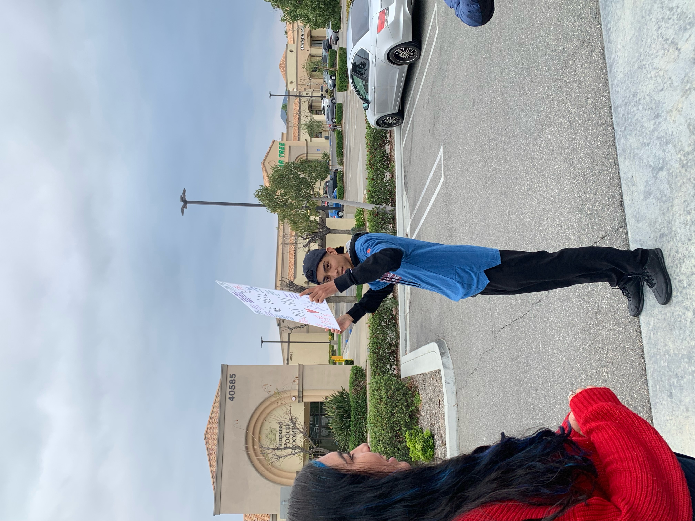
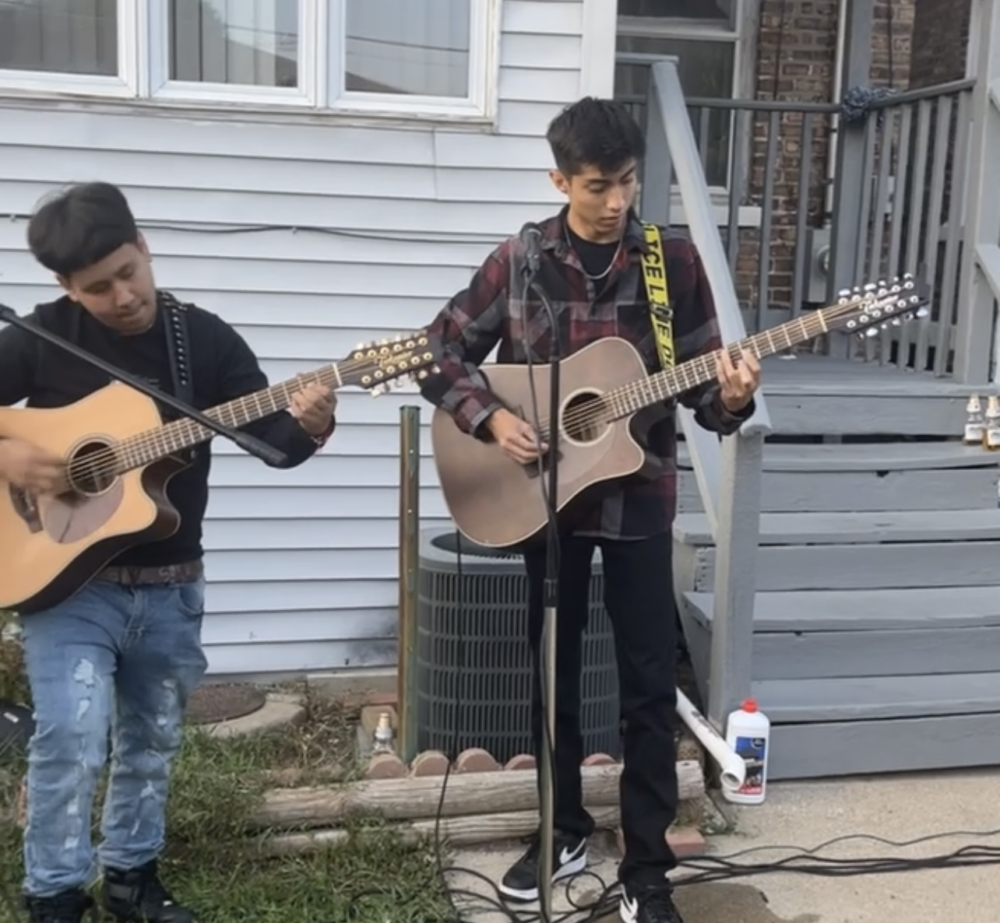
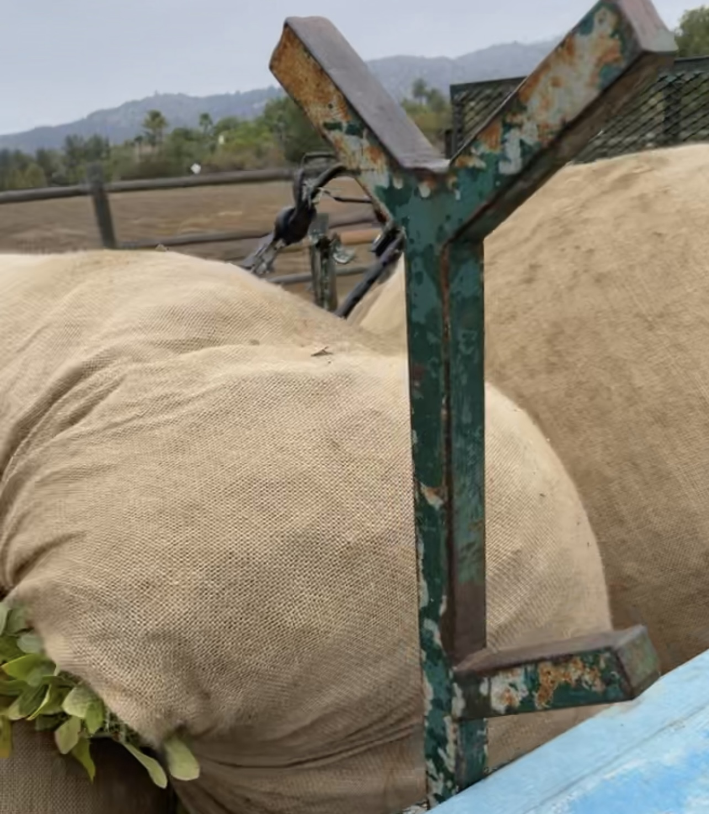
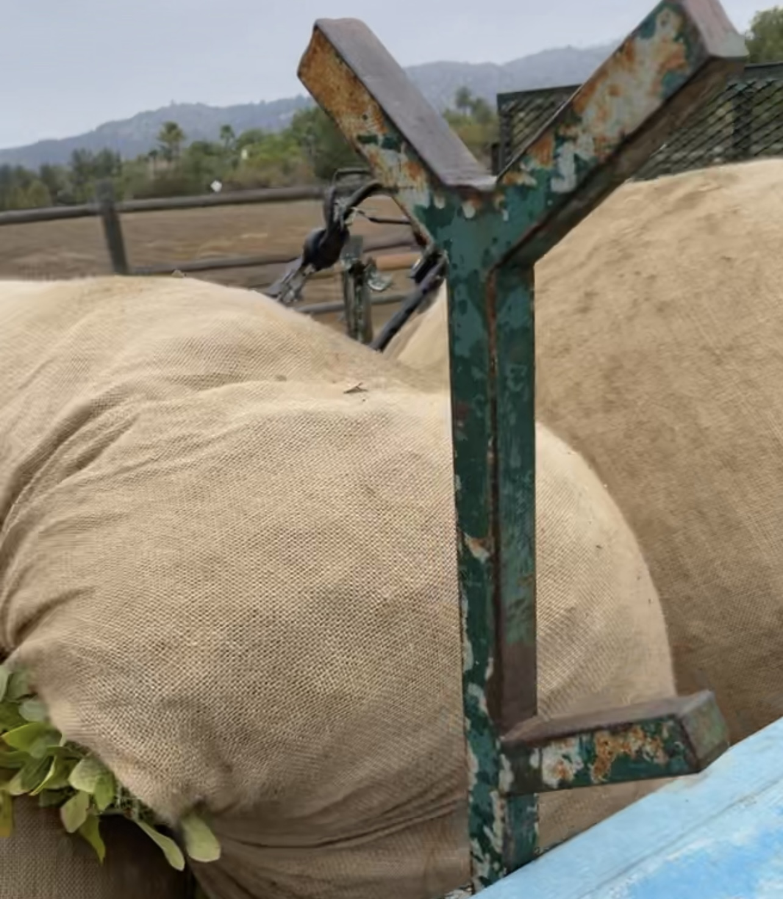

Gustavo Perez
Hello, my name is Gustavo Perez and I am currently a second year student at the University of California, Riverside. My current major is Pre-Business and I hope to soon focus on information systems. After taking many classes involving business, I have learned a lot and am interested in learning so much more. I am working hard to achieve this goal and continue to take 4 classes a quarter to get as much done and prepare myself. I commute to school everyday and spend my mornings on campus before I drive back home to go to work. In commuting to school, I have had to learn how to manage work with school and having enough time to finish all my school work before I have to clock in to my job. I value both school and my job greatly and ensure I manage to balance both out.
Currently I am also a manager at my local mcdonalds. I first applied back in January 2022, and began working as a crew member. I had little to no work experience so I was trying my best to learn as fast as I could. After asking many questions and practicing, I began to become a great worker and offered more hours. After spending a few months there and working hard, they offered me the position. At first I was hesitant as I didn’t want it to interfere with my work, but after giving it some thought, I decided to take the opportunity and manage my time safely so I wouldn’t get overwhelmed. Work has been great to me as I learned many skills such as leadership in leading a shift. I also work with cash inputting all our sales into the computer. I have learned a lot and now I’m being used as an example as to how to work. I also have to keep track of the waste we go through. I have met great people at work that have become a great part of my life. It has been a great time and I hope to keep learning new things as a manager.
When I am given some free time, I have a lot of hobbies that take up the rest of my time. Playing instruments is my favorite hobby. I have three guitars and one accordion. I have been playing the guitar for 5 years and love spending time learning new songs and playing along with them. I use my classical mostly for playing slow fingerstyle songs. It is calmly listening to myself play and playing these beautiful songs. I also have a twelve string guitar that I play songs in Spanish. It helps me connect with my culture and is great in allowing me to enjoy all types of music. Another one of my hobbies is watching soccer. Soccer is my favorite sport and I’m always consistent in making sure I watch all the games. It is very interesting to me and it’s great to have a team to support and be passionate about.
Experience
Manager
• Managed shifts as a leader
• Imput cash and total earnings for the shift
• Accounted for waste and food costs
Dish Washer
• Responsible ensureing all dishes were sanitary
• Helped with preping food for the chef
• Took out the trash and closed the store
Landscaping
• Ensured all neighborhoods and sidewalks were clean and safe to walk one
• Ensured all parks were clean and safe
• Cut grass in parks
• Followed Standards in making sure the streets were tidy
Education
UC Riverside
Portfolio




